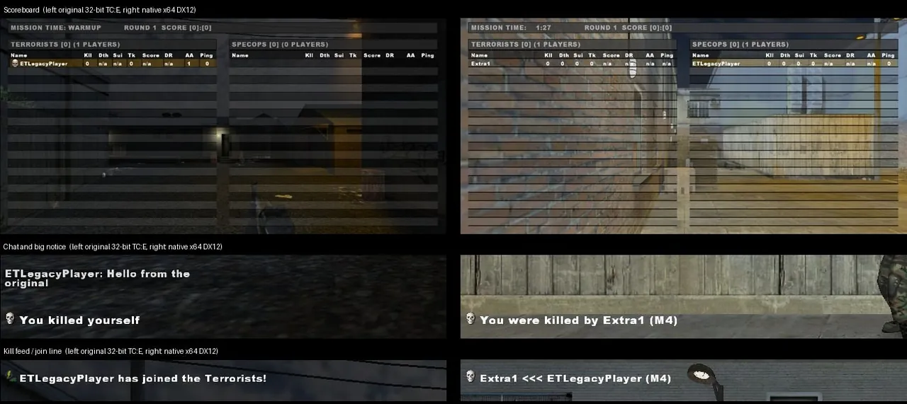

TrueCombat: Elite, heute spielbar
TC:E war einer der anspruchsvollsten Taktik-Shooter seiner Zeit. TrueCombat: Platinum bringt es als kostenloses 64-Bit-Spiel auf modernes Windows, mit den Maps, Waffen und der Bewegung, die du kennst.
Was TrueCombat: Elite war
TrueCombat: Elite, kurz TC:E, ist eine kostenlose Total Conversion für Wolfenstein: Enemy Territory, entwickelt von Team Terminator. Sie folgte auf das ursprüngliche TrueCombat für Quake III Arena und tauschte den Zweiten Weltkrieg der Engine gegen modernes Gefecht.
Es spielte sich wie nichts anderes auf dieser Engine. Ein Leben pro Runde. Kimme und Korn und echtes Waffenhandling. Ausdauer, die unbedachtes Sprinten bestrafte, Lehnen um Ecken und Maps, die für langsames, überlegtes Spiel gebaut waren. Ein einziger Fehler beendete deine Runde, und genau deshalb sind die Leute jahrelang geblieben.
Warum TC:E heute schwer zu spielen ist
Das Original läuft noch, aber man sieht ihm sein Alter an. Es ist eine 32-Bit-Mod auf einer Engine von 2003, braucht eine separate Installation von Enemy Territory und hat weder Installer noch Updater.
Das größere Problem ist, ein Match zu finden. Die meisten öffentlichen Server, die die Community getragen haben, sind still geworden, und wer zurückkehrt, findet keinen klaren Einstieg.
Was TrueCombat: Platinum ist
Platinum baut TC:E als natives 64-Bit-Spiel für Windows mit einem DirectX-12-Renderer neu auf. Das Ziel ist einfach: Alles, was in TC:E war, soll so aussehen, klingen und sich so anfühlen, wie du es kennst.
- Die originalen Maps, Soldaten und das HUD. Das HUD ist Pixel für Pixel mit dem Original abgeglichen.
- Die originale Bewegung. Die Geschwindigkeiten für Sprinten, Laufen, Hocken und Liegen stammen direkt aus den TC:E-Werten, dazu Lehnen, Leitern und Schwimmen.
- Das komplette Arsenal. Alle 27 Schusswaffen, das Messer und jede Granate, mit originalem Schaden, Rückstoß und originaler Streuung.
- Alle sieben Spielmodi, von Elimination bis Bomb und Flag Capture.

Original und Platinum im Vergleich
| TrueCombat: Elite | TrueCombat: Platinum | |
|---|---|---|
| Plattform | 32-Bit-Mod für Wolfenstein: Enemy Territory | Natives 64-Bit-Spiel für Windows, sonst nichts zu installieren |
| Renderer | OpenGL, auf einer Engine von 2003 | DirectX 12 mit OpenGL als Ausweichlösung, optional NVIDIA DLSS / DLAA |
| Look | Das Original | Das Original im Preset Low oder moderne Beleuchtung und Sonnenschatten in Echtzeit auf Ultra |
| Installation | Enemy Territory plus die Mod-Dateien | Ein kleiner Installer |
| Updates | Manuelle Downloads | Signierte Updates über den Launcher |
| Server | Community-Server, nur wenige noch online | Zwei offizielle EU-Server rund um die Uhr, eine öffentliche Serverliste und Hosten mit einem Klick |
| Ranglisten | Nicht eingebaut | Bestenlisten und Spielerprofile aus jedem Ranked-Match |
| Clan-Matches | Von Hand organisiert | Match-Modus mit Ready-up, Messerrunde, Halbzeit und Auszeiten |
| Bildschirme | Eigene Auflösungen über Konsolenbefehle | Jede Auflösung, mit breiterem Sichtfeld auf 21:9 und 32:9 |
| Preis | Kostenlos | Kostenlos |
Nach ein paar Jahren zurück
Wenn du TC:E gespielt hast, kannst du Platinum schon spielen. Tasten, Tempo und Maps sind da, wo du sie gelassen hast.
- Lade den Installer herunter und lass den Launcher das Spiel einrichten.
- Tritt über den Tab Servers Official #2 bei, um den Rost abzuschütteln, und wechsle zu Official #1, wenn deine Matches zählen sollen.
- Sag Hallo auf dem Discord. Veteranen und neue Spieler verabreden dort ihre Matches.
Neu bei TC:E? Der Einsteiger-Guide erklärt die Steuerung, die Spielmodi und die Gewohnheiten, die dich am Leben halten.